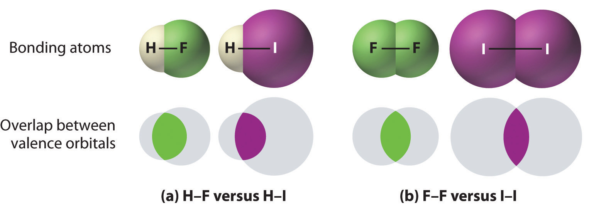

In proposing his theory that octets can be completed by two atoms sharing electron pairs, Lewis provided scientists with the first description of covalent bonding. In this section, we expand on this and describe some of the properties of covalent bonds.
When we draw Lewis structures, we place one, two, or three pairs of electrons between adjacent atoms. In the Lewis bonding model, the number of electron pairs that hold two atoms together is called the bond orderThe number of electron pairs that hold two atoms together.. For a single bond, such as the C–C bond in H3C–CH3, the bond order is one. For a double bond (such as H2C=CH2), the bond order is two. For a triple bond, such as HC≡CH, the bond order is three.
When analogous bonds in similar compounds are compared, bond length decreases as bond order increases. The bond length data in Table 8.5 "Bond Lengths and Bond Dissociation Energies for Bonds with Different Bond Orders in Selected Gas-Phase Molecules at 298 K", for example, show that the C–C distance in H3C–CH3 (153.5 pm) is longer than the distance in H2C=CH2 (133.9 pm), which in turn is longer than that in HC≡CH (120.3 pm). Additionally, as noted in Section 8.5 "Lewis Structures and Covalent Bonding", molecules or ions whose bonding must be described using resonance structures usually have bond distances that are intermediate between those of single and double bonds, as we demonstrated with the C–C distances in benzene. The relationship between bond length and bond order is not linear, however. A double bond is not half as long as a single bond, and the length of a C=C bond is not the average of the lengths of C≡C and C–C bonds. Nevertheless, as bond orders increase, bond lengths generally decrease.
Table 8.5 Bond Lengths and Bond Dissociation Energies for Bonds with Different Bond Orders in Selected Gas-Phase Molecules at 298 K
| Compound | Bond Order | Bond Length (pm) | Bond Dissociation Energy (kJ/mol) | Compound | Bond Order | Bond Length (pm) | Bond Dissociation Energy (kJ/mol) |
|---|---|---|---|---|---|---|---|
| H3C–CH3 | 1 | 153.5 | 376 | H3C–NH2 | 1 | 147.1 | 331 |
| H2C=CH2 | 2 | 133.9 | 728 | H2C=NH | 2 | 127.3 | 644 |
| HC≡CH | 3 | 120.3 | 965 | HC≡N | 3 | 115.3 | 937 |
| H2N–NH2 | 1 | 144.9 | 275.3 | H3C–OH | 1 | 142.5 | 377 |
| HN=NH | 2 | 125.2 | 456 | H2C=O | 2 | 120.8 | 732 |
| N≡N | 3 | 109.8 | 945.3 | O=C=O | 2 | 116.0 | 799 |
| HO–OH | 1 | 147.5 | 213 | C≡O | 3 | 112.8 | 1076.5 |
| O=O | 2 | 120.7 | 498.4 | ||||
Sources: Data from CRC Handbook of Chemistry and Physics (2004); Lange’s Handbook of Chemistry (2005); http://cccbdb.nist.gov.
As shown in Table 8.5 "Bond Lengths and Bond Dissociation Energies for Bonds with Different Bond Orders in Selected Gas-Phase Molecules at 298 K", triple bonds between like atoms are shorter than double bonds, and because more energy is required to completely break all three bonds than to completely break two, a triple bond is also stronger than a double bond. Similarly, double bonds between like atoms are stronger and shorter than single bonds. Bonds of the same order between different atoms show a wide range of bond energies, however. Table 8.6 "Average Bond Energies (kJ/mol) for Commonly Encountered Bonds at 273 K" lists the average values for some commonly encountered bonds. Although the values shown vary widely, we can observe four trends:
Table 8.6 Average Bond Energies (kJ/mol) for Commonly Encountered Bonds at 273 K
| Single Bonds | Multiple Bonds | ||||||||||
|---|---|---|---|---|---|---|---|---|---|---|---|
| H–H | 432 | C–C | 346 | N–N | ≈167 | O–O | ≈142 | F–F | 155 | C=C | 602 |
| H–C | 411 | C–Si | 318 | N–O | 201 | O–F | 190 | F–Cl | 249 | C≡C | 835 |
| H–Si | 318 | C–N | 305 | N–F | 283 | O–Cl | 218 | F–Br | 249 | C=N | 615 |
| H–N | 386 | C–O | 358 | N–Cl | 313 | O–Br | 201 | F–I | 278 | C≡N | 887 |
| H–P | ≈322 | C–S | 272 | N–Br | 243 | O–I | 201 | Cl–Cl | 240 | C=O | 749 |
| H–O | 459 | C–F | 485 | P–P | 201 | S–S | 226 | Cl–Br | 216 | C≡O | 1072 |
| H–S | 363 | C–Cl | 327 | S–F | 284 | Cl–I | 208 | N=N | 418 | ||
| H–F | 565 | C–Br | 285 | S–Cl | 255 | Br–Br | 190 | N≡N | 942 | ||
| H–Cl | 428 | C–I | 213 | S–Br | 218 | Br–I | 175 | N=O | 607 | ||
| H–Br | 362 | Si–Si | 222 | I–I | 149 | O=O | 494 | ||||
| H–I | 295 | Si–O | 452 | S=O | 532 | ||||||
Source: Data from J. E. Huheey, E. A. Keiter, and R. L. Keiter, Inorganic Chemistry, 4th ed. (1993).
1. Bonds between hydrogen and atoms in the same column of the periodic table decrease in strength as we go down the column. Thus an H–F bond is stronger than an H–I bond, H–C is stronger than H–Si, H–N is stronger than H–P, H–O is stronger than H–S, and so forth. The reason for this is that the region of space in which electrons are shared between two atoms becomes proportionally smaller as one of the atoms becomes larger (part (a) in Figure 8.11 "The Strength of Covalent Bonds Depends on the Overlap between the Valence Orbitals of the Bonded Atoms").
2. Bonds between like atoms usually become weaker as we go down a column (important exceptions are noted later). For example, the C–C single bond is stronger than the Si–Si single bond, which is stronger than the Ge–Ge bond, and so forth. As two bonded atoms become larger, the region between them occupied by bonding electrons becomes proportionally smaller, as illustrated in part (b) in Figure 8.11 "The Strength of Covalent Bonds Depends on the Overlap between the Valence Orbitals of the Bonded Atoms". Noteworthy exceptions are single bonds between the period 2 atoms of groups 15, 16, and 17 (i.e., N, O, F), which are unusually weak compared with single bonds between their larger congeners. It is likely that the N–N, O–O, and F–F single bonds are weaker than might be expected due to strong repulsive interactions between lone pairs of electrons on adjacent atoms. The trend in bond energies for the halogens is therefore
Cl–Cl > Br–Br > F–F > I–ISimilar effects are also seen for the O–O versus S–S and for N–N versus P–P single bonds.
Bonds between hydrogen and atoms in a given column in the periodic table are weaker down the column; bonds between like atoms usually become weaker down a column.
3. Because elements in periods 3 and 4 rarely form multiple bonds with themselves, their multiple bond energies are not accurately known. Nonetheless, they are presumed to be significantly weaker than multiple bonds between lighter atoms of the same families. Compounds containing an Si=Si double bond, for example, have only recently been prepared, whereas compounds containing C=C double bonds are one of the best-studied and most important classes of organic compounds.
Figure 8.11 The Strength of Covalent Bonds Depends on the Overlap between the Valence Orbitals of the Bonded Atoms
The relative sizes of the region of space in which electrons are shared between (a) a hydrogen atom and lighter (smaller) vs. heavier (larger) atoms in the same periodic group; and (b) two lighter versus two heavier atoms in the same group. Although the absolute amount of shared space increases in both cases on going from a light to a heavy atom, the amount of space relative to the size of the bonded atom decreases; that is, the percentage of total orbital volume decreases with increasing size. Hence the strength of the bond decreases.
4. Multiple bonds between carbon, oxygen, or nitrogen and a period 3 element such as phosphorus or sulfur tend to be unusually strong. In fact, multiple bonds of this type dominate the chemistry of the period 3 elements of groups 15 and 16. Multiple bonds to phosphorus or sulfur occur as a result of d-orbital interactions, as we discussed for the SO42− ion in Section 8.6 "Exceptions to the Octet Rule". In contrast, silicon in group 14 has little tendency to form discrete silicon–oxygen double bonds. Consequently, SiO2 has a three-dimensional network structure in which each silicon atom forms four Si–O single bonds, which makes the physical and chemical properties of SiO2 very different from those of CO2.
Bond strengths increase as bond order increases, while bond distances decrease.
Bond energy is defined as the energy required to break a particular bond in a molecule in the gas phase. Its value depends on not only the identity of the bonded atoms but also their environment. Thus the bond energy of a C–H single bond is not the same in all organic compounds. For example, the energy required to break a C–H bond in methane varies by as much as 25% depending on how many other bonds in the molecule have already been broken (Table 8.7 "Energies for the Dissociation of Successive C–H Bonds in Methane"); that is, the C–H bond energy depends on its molecular environment. Except for diatomic molecules, the bond energies listed in Table 8.6 "Average Bond Energies (kJ/mol) for Commonly Encountered Bonds at 273 K" are average values for all bonds of a given type in a range of molecules. Even so, they are not likely to differ from the actual value of a given bond by more than about 10%.
Table 8.7 Energies for the Dissociation of Successive C–H Bonds in Methane
| Reaction | D (kJ/mol) |
|---|---|
| CH4(g) → CH3(g) + H(g) | 439 |
| CH3(g) → CH2(g) + H(g) | 462 |
| CH2(g) → CH(g) + H(g) | 424 |
| CH(g) → C(g) + H(g) | 338 |
Source: Data from CRC Handbook of Chemistry and Physics (2004).
We can estimate the enthalpy change for a chemical reaction by adding together the average energies of the bonds broken in the reactants and the average energies of the bonds formed in the products and then calculating the difference between the two. If the bonds formed in the products are stronger than those broken in the reactants, then energy will be released in the reaction (ΔHrxn < 0):
Equation 8.14
The ≈ sign is used because we are adding together average bond energies; hence this approach does not give exact values for ΔHrxn.
Let’s consider the reaction of 1 mol of n-heptane (C7H16) with oxygen gas to give carbon dioxide and water. This is one reaction that occurs during the combustion of gasoline:
Equation 8.15
CH3(CH2)5CH3(l) + 11 O2(g) → 7 CO2(g) + 8 H2O(g)In this reaction, 6 C–C bonds, 16 C–H bonds, and 11 O=O bonds are broken per mole of n-heptane, while 14 C=O bonds (two for each CO2) and 16 O–H bonds (two for each H2O) are formed. The energy changes can be tabulated as follows:
| Bonds Broken (kJ/mol) | Bonds Formed (kJ/mol) | ||
|---|---|---|---|
| 6 C–C | 346 × 6 = 2076 | 14 C=O | 799 × 14 = 11,186 |
| 16 C–H | 411 × 16 = 6576 | 16 O–H | 459 × 16 = 7344 |
| 11 O=O | 494 × 11 = 5434 | Total = 18,530 | |
| Total = 14,086 | |||
The bonds in the products are stronger than the bonds in the reactants by about 4444 kJ/mol. This means that ΔHrxn is approximately −4444 kJ/mol, and the reaction is highly exothermic (which is not too surprising for a combustion reaction).
If we compare this approximation with the value obtained from measured values (ΔHrxn = −4817 kJ/mol), we find a discrepancy of only about 8%, less than the 10% typically encountered. Chemists find this method useful for calculating approximate enthalpies of reaction for molecules whose actual values are unknown. These approximations can be important for predicting whether a reaction is exothermic or endothermic—and to what degree.
The compound RDX (Research Development Explosive) is a more powerful explosive than dynamite and is used by the military. When detonated, it produces gaseous products and heat according to the following reaction. Use the approximate bond energies in Table 8.6 "Average Bond Energies (kJ/mol) for Commonly Encountered Bonds at 273 K" to estimate the ΔHrxn per mole of RDX.
Given: chemical reaction, structure of reactant, and Table 8.6 "Average Bond Energies (kJ/mol) for Commonly Encountered Bonds at 273 K"
Asked for: ΔHrxn per mole
Strategy:
A List the types of bonds broken in RDX, along with the bond energy required to break each type. Multiply the number of each type by the energy required to break one bond of that type and then add together the energies. Repeat this procedure for the bonds formed in the reaction.
B Use Equation 8.14 to calculate the amount of energy consumed or released in the reaction (ΔHrxn).
Solution:
We must add together the energies of the bonds in the reactants and compare that quantity with the sum of the energies of the bonds in the products. A nitro group (–NO2) can be viewed as having one N–O single bond and one N=O double bond, as follows:

In fact, however, both N–O distances are usually the same because of the presence of two equivalent resonance structures.
A We can organize our data by constructing a table:
| Bonds Broken (kJ/mol) | Bonds Formed (kJ/mol) | ||
|---|---|---|---|
| 6 C–N | 305 × 6 = 1830 | 3 N≡N | 942 × 3 = 2826 |
| 6 C–H | 411 × 6 = 2466 | 6 C=O | 799 × 6 = 4794 |
| 3 N–N | 167 × 3 = 501 | 6 O–H | 459 × 6 = 2754 |
| 3 N–O | 201 × 3 = 603 | Total = 10,374 | |
| 3 N=O | 607 × 3 = 1821 | ||
| 1.5 O=O | 494 × 1.5 = 741 | ||
| Total = 7962 | |||
B From Equation 8.14, we have
Thus this reaction is also highly exothermic.
Exercise
The molecule HCFC-142b, a hydrochlorofluorocarbon used in place of chlorofluorocarbons (CFCs) such as the Freons, can be prepared by adding HCl to 1,1-difluoroethylene:
Use tabulated bond energies to calculate ΔHrxn.
Answer: −54 kJ/mol
Bond order is the number of electron pairs that hold two atoms together. Single bonds have a bond order of one, and multiple bonds with bond orders of two (a double bond) and three (a triple bond) are quite common. In closely related compounds with bonds between the same kinds of atoms, the bond with the highest bond order is both the shortest and the strongest. In bonds with the same bond order between different atoms, trends are observed that, with few exceptions, result in the strongest single bonds being formed between the smallest atoms. Tabulated values of average bond energies can be used to calculate the enthalpy change of many chemical reactions. If the bonds in the products are stronger than those in the reactants, the reaction is exothermic and vice versa.
Which would you expect to be stronger—an S–S bond or an Se–Se bond? Why?
Which element—nitrogen, phosphorus, or arsenic—will form the strongest multiple bond with oxygen? Why?
Why do multiple bonds between oxygen and period 3 elements tend to be unusually strong?
What can bond energies tell you about reactivity?
Bond energies are typically reported as average values for a range of bonds in a molecule rather than as specific values for a single bond? Why?
If the bonds in the products are weaker than those in the reactants, is a reaction exothermic or endothermic? Explain your answer.
A student presumed that because heat was required to initiate a particular reaction, the reaction product would be stable. Instead, the product exploded. What information might have allowed the student to predict this outcome?
What is the bond order about the central atom(s) of hydrazine (N2H4), nitrogen, and diimide (N2H2)? Draw Lewis electron structures for each compound and then arrange these compounds in order of increasing N–N bond distance. Which of these compounds would you expect to have the largest N–N bond energy? Explain your answer.
What is the carbon–carbon bond order in ethylene (C2H4), BrH2CCH2Br, and FCCH? Arrange the compounds in order of increasing C–C bond distance. Which would you expect to have the largest C–C bond energy? Why?
From each pair of elements, select the one with the greater bond strength? Explain your choice in each case.
From each pair of elements, select the one with the greater bond strength? Explain your choice in each case.
Approximately how much energy per mole is required to completely dissociate acetone [(CH3)2CO] and urea [(NH2)2CO] into their constituent atoms?
Approximately how much energy per mole is required to completely dissociate ethanol, formaldehyde, and hydrazine into their constituent atoms?
Is the reaction of diimine (N2H2) with oxygen to produce nitrogen and water exothermic or endothermic? Quantify your answer.
N2H4, bond order 1; N2H2, bond order 2; N2, bond order 3; N–N bond distance: N2 < N2H2 < N2H4; Largest bond energy: N2; Highest bond order correlates with strongest and shortest bond.